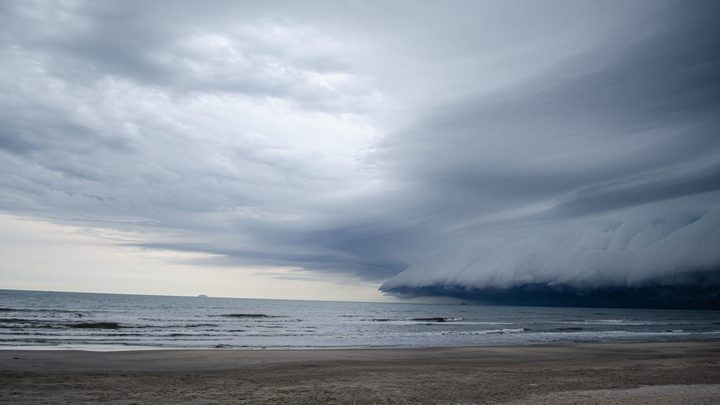

Itapema · Turismo
Itapema · TurismoCavalgada da Festa Farroupilha larga às 18h30 de quinta em Itapema, e a programação final mudou três horários de agosto
A lista de 3 de setembro que este texto compara com a de sexta-feira.
A segunda edição acaba neste domingo, 13 de setembro, na Praça da Paz, com entrada gratuita. A Prefeitura publicou a programação completa em 3 de setembro e publicou outra versão em 11 de setembro, dentro da notícia sobre a chegada da Chama Crioula. Comparamos as duas linha por linha. O Torneio de Laço Infantil das 9h e a apresentação da Invernada Adulta das 18h30 não estão na lista nova, o show de encerramento antecipou de 18h45 para 18h30 e entrou um almoço com costela fogo de chão, sem horário e sem preço publicado.
Em 30 segundos · Modo de Leitura, formato original Santa Informa
A Festa Farroupilha de Itapema termina hoje.
Na Praça da Paz, com entrada gratuita.
É a segunda edição. A primeira foi em 2025.
A Prefeitura publicou duas programações.
Uma em 3 de setembro, outra em 11.
As duas não batem.
Comparamos linha por linha.
O domingo tinha nove itens na lista velha.
Na nova tem sete.
Saiu o Torneio de Laço Infantil das 9h.
Saiu a Invernada Adulta das 18h30.
Sem aviso de cancelamento.
O encerramento era 18h45.
Agora é 18h30.
Com Carlos Magrão e Banda.
A mateada segue às 9h.
Luciano Guaise segue às 14h.
Entrou um almoço com costela fogo de chão.
Sem horário e sem preço.
Os dois textos dizem que é gratuito.
Nenhum diz se o almoço é vendido.
O sábado também mudou de horário.
A festa tem quatro dias, de 10 a 13.
A nota de sexta fala em três.
TurismoPublicada em Redação Santa Informa
A segunda Festa Farroupilha de Itapema termina neste domingo, 13 de setembro, na Praça da Paz, com entrada gratuita. A Prefeitura publicou a programação completa em 3 de setembro e outra versão em 11 de setembro, dentro da notícia da chegada da Chama Crioula. As duas listas não batem. Comparamos linha por linha o que está marcado para hoje.
Na programação de 3 de setembro, o domingo tinha nove itens e abria com a mateada e o Torneio de Laço Infantil, modalidade Vaca Parada, os dois às 9h. Na lista de 11 de setembro são sete itens, a mateada continua às 9h e o torneio não aparece em lugar nenhum. Saiu também a apresentação da Invernada Adulta Tropeiros do Litoral, marcada para as 18h30. A Prefeitura não publicou aviso de cancelamento nem explicou as duas ausências.
O show de Carlos Magrão e Banda fecha a festa nas duas listas, em horário diferente. Era às 18h45 e passou para as 18h30, que era justamente o horário da Invernada Adulta. O show de Luciano Guaise e Banda, que ia das 14h às 16h30, agora aparece só com a hora de início. E o bloco de danças e invernadas do fim da tarde passou das 16h30 para as 16h.
A lista nova traz um item que não existia: almoço com costela fogo de chão e apresentação de talentos locais, entre as danças das 11h20 e o show das 14h. Não há horário de início nem valor. O texto de 3 de setembro diz que toda a programação é gratuita, e o de 11 de setembro fala em participação gratuita e aberta ao público. Nenhum dos dois informa se o almoço é vendido.
Não foi só o domingo. O Bailinho da Melhor Idade com Kevin e Wesley ia das 15h às 18h e passou a ir até as 18h30 na lista nova, que deixou de citar o hasteamento da bandeira das 19h30. A notícia de sexta chama a festa de três dias, embora a programação comece na quinta, 10, com a cavalgada saindo do CTG Tropeiros do Litoral. São quatro dias.
O resumo de 30 segundos está no topo e a versão completa é o texto acima. Aqui ficam as três leituras da casa sobre o mesmo assunto.
Clara, a otimista
Em dois anos a festa saiu do nada e virou data no calendário da cidade. Quatro dias de programação, cavalgada pela beira da praia, praça cheia e ninguém pagando ingresso. Para uma cidade que costuma parar entre a temporada e o verão seguinte, isso é movimento em setembro, e movimento em setembro é o que o comércio pede.
E tem uma coisa boa escondida na confusão de horário: a segunda lista existe porque alguém sentou e refez a programação depois que a festa começou. Evento ao vivo muda mesmo. Melhor uma Prefeitura que ajusta e publica do que uma que deixa o cartaz antigo pendurado e cala.
Seu Prudêncio, o criterioso
Merece atenção o fato de as duas programações estarem no ar ao mesmo tempo, sem que nenhuma diga qual vale. Quem imprimiu a lista de 3 de setembro e combinou de levar a criança para o torneio de laço às 9h chegou na praça com uma informação que o site da própria Prefeitura já tinha trocado. Isso custa a confiança de quem se programou.
Uma sugestão útil, e barata: quando a agenda mudar, marcar a página antiga com a data da revisão e um link para a versão nova. É meia hora de trabalho e resolve. O mesmo vale para o almoço com costela, que precisa de horário e de preço no aviso, porque comida em festa normalmente é vendida e o texto diz que tudo é gratuito.
Dito isso, é preciso reconhecer o que foi bem feito. A Prefeitura publicou a programação com uma semana de antecedência, detalhada hora a hora e com o percurso da cavalgada descrito rua por rua. Muita festa desse porte não passa de um cartaz com o nome das bandas, e foi justamente por existir uma lista detalhada que deu para comparar e apontar o que mudou.
Caco, o sarcástico
A festa tem duas programações oficiais. Uma para quem se planejou, outra para quem apareceu. A tradição gaúcha ensina paciência, e a agenda de Itapema resolveu treinar a nossa.
Reparem na precisão: o encerramento não foi adiado, foi antecipado. Quinze minutos. Na história das festas municipais brasileiras, essa é a primeira vez que alguém cortou tempo do final em vez de esticar até de madrugada.
Mas vou ser honesto. Entrada de graça, praça no centro, costela no fogo de chão e a cidade inteira convidada num domingo de setembro. Se o pior defeito é ter dois horários para o mesmo show, tá ruim, mas é progresso.
Fontes: a programação completa dos quatro dias, com o Torneio de Laço Infantil às 9h de domingo, a Invernada Adulta às 18h30, o encerramento às 18h45, o Bailinho de sábado das 15h às 18h e o hasteamento da bandeira às 19h30, está em Festa Farroupilha movimenta Itapema entre os dias 10 e 13 de setembro, publicada no site da Prefeitura de Itapema em 3 de setembro de 2026. A lista revisada, com sete itens no domingo, o almoço com costela fogo de chão, o show das 14h, as invernadas das 16h, o encerramento às 18h30 e o Bailinho de sábado até as 18h30, está em Chama Crioula chega a Itapema e marca início da 2ª Festa Farroupilha, publicada em 11 de setembro de 2026, que também registra a cavalgada de quinta-feira e a fala da secretária de Turismo, Pati Marin. O horário de atendimento da Prefeitura, das 12h às 18h de segunda a sexta, e o telefone (47) 3268-8000 estão no cabeçalho do site da Prefeitura de Itapema. A programação de agosto e as três mudanças anteriores estão na nossa matéria Cavalgada da Festa Farroupilha larga às 18h30 de quinta em Itapema. A previsão de chuva forte e granizo para os dois primeiros dias da festa está em Defesa Civil prevê temporal com granizo na quinta e na sexta. A comparação item a item entre as duas programações é conta nossa, feita sobre as duas páginas da Prefeitura, abertas e lidas uma a uma neste domingo.
Itapema · TurismoA lista de 3 de setembro que este texto compara com a de sexta-feira.

Itapema · ClimaO que estava previsto para a cavalgada e para a abertura, que aconteceram assim mesmo.
 Itapema · Turismo
Itapema · TurismoO plano lançado na semana passada pela mesma Secretaria de Turismo que organiza a festa.